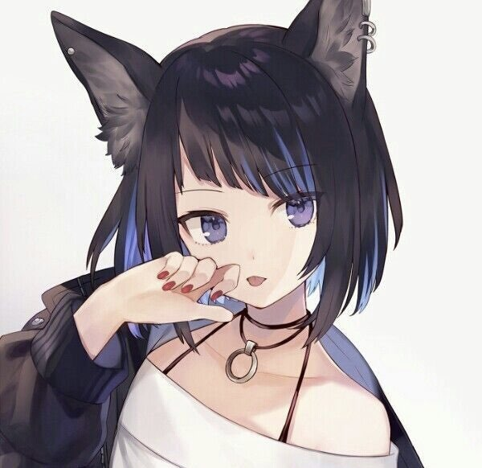

Lux

Basics
Name
Luxton 'Lux' Argyle
Username
LUX
Guild
Mod Guild
Gender / Pronouns
Female , She/Her
Age
21
Orientation / Sexuality
Bisexual
Availability
Taken by James
Personality
Lux is a very chipper person, with a vulgar tongue. While not the brightest of the family, she's incredibly loving and kind to those she cares about. She loves to make others smile, with her wit and jokes. She also enjoys,,mild amounts of violence.
Character Stats
Race / Class
Neko
Level
70
Extra Extremities
Cat ears / Tails
Abilities
- Clones, Lux can create a mass amount of clones, used to oversee many different game matches.
- Enhanced Senses
Weaknesses
Low magical resistance.
Special Skills
She plays the drums!